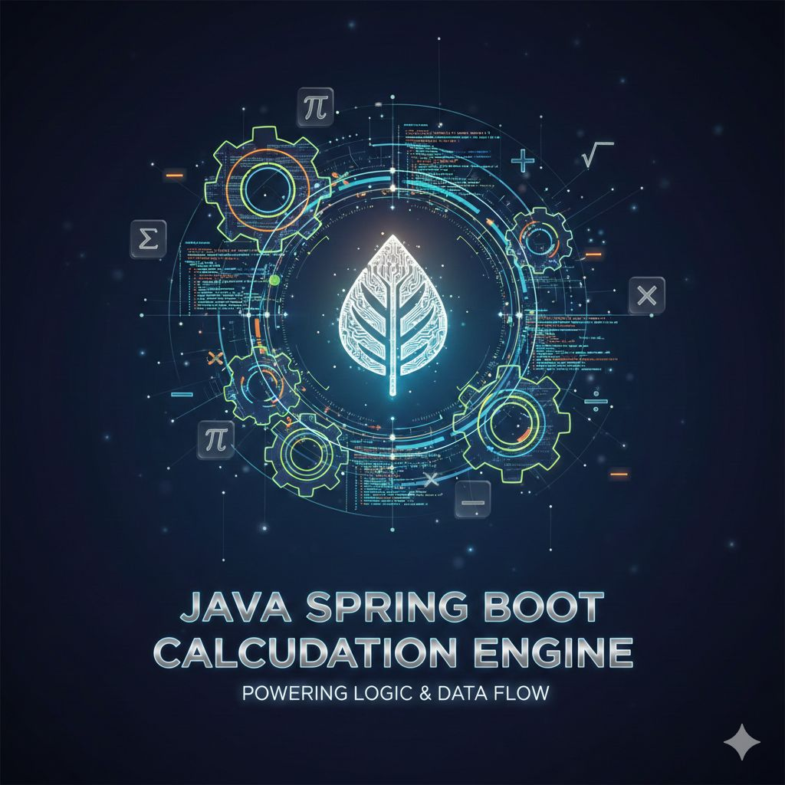

Writing
Notes from the build.
Long-form write-ups about the systems I build, the constraints behind them and what I learned when the first approach failed.
All posts
-
Computer vision
Building a computer vision system for automated traffic analysis
Counting vehicles across a line in video, and why a fixed horizontal rule was the wrong starting point.

-
Go
Authentication system in Go
Building authentication from scratch and working through the details that libraries usually hide.

-
Regulation
Designing a Basel III aligned regulatory calculation engine
A Spring Boot engine built around governance, auditability and reproducibility.

-
Reporting
A production-ready regulatory calculation engine with Spring Boot
What it takes for a personal project to behave like a system a regulated environment could trust.

-
AML
Building a real-time anti-money laundering detection system in Go
From anomaly experiment to a complete system with rules, alerts and regulatory reporting.
-
Java
Why I chose Spring Boot for my regulatory reporting automation system
When financial institutions rely on the output, technology choices become risk decisions.

-
Desktop
Why I switched my desktop app backend from Tauri to Wails
Choosing a Go backend over Rust after the stack started getting in the way of the work.
-
Research
Beyond the known pattern: graph learning under label scarcity
What a synthetic transaction graph taught me about scarce labels, held-out typologies and simple baselines.